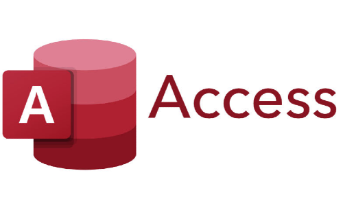
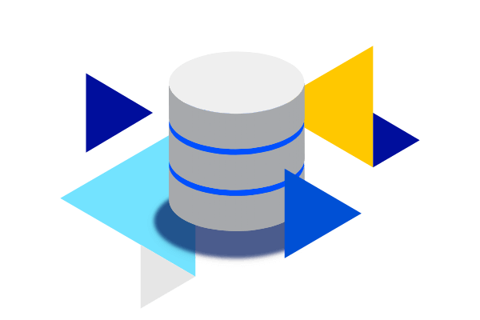

VIDEOS EXPLICATIVOS
En esta sección se agregaran videos ilustrativos acerca de las base de datos y sus consultas.
Introducción
MySQL Workbench y Microsoft Access son dos herramientas ampliamente utilizadas para gestionar bases de datos, pero están orientadas a diferentes necesidades y contextos. A continuación, se presentan las principales características y diferencias entre ambas.
Propósito y Uso Principal
MySQL Workbench

MySQL Workbench es una herramienta de diseño y administración para bases de datos que utiliza el sistema de gestión de bases de datos MySQL. Es especialmente popular en aplicaciones web y de servidor debido a su robustez y escalabilidad.
Uso Principal: Ideal para aplicaciones de gran escala, desarrolladores de bases de datos, y proyectos que requieren bases de datos relacionales en servidores.
Microsoft Access
Microsoft Access es un sistema de gestión de bases de datos de escritorio que forma parte de la suite de Microsoft Office. Está diseñado para usuarios de negocios o pequeñas empresas que necesitan gestionar bases de datos sin necesidad de conocimientos técnicos avanzados.
Uso Principal: Ideal para bases de datos de pequeña a mediana escala, con facilidad de uso para usuarios no técnicos que deseen crear y administrar bases de datos de manera rápida.
Escalabilidad

MySQL Workbench es altamente escalable y se utiliza comúnmente en grandes proyectos y sistemas empresariales, soportando miles de usuarios concurrentes y bases de datos con millones de registros.
Microsoft Access está diseñado para bases de datos más pequeñas, generalmente limitadas a un máximo de 2 GB de datos. No está optimizado para manejar grandes cantidades de usuarios o registros.
Facilidad de Uso
MySQL Workbench está diseñado para desarrolladores y administradores de bases de datos, por lo que su uso puede ser complejo para personas sin experiencia técnica. Ofrece una interfaz gráfica, pero requiere conocimientos de SQL y administración de bases de datos.
Microsoft Access es conocido por su facilidad de uso, con una interfaz intuitiva y accesible para usuarios no técnicos. Ofrece herramientas de arrastrar y soltar, formularios, y consultas predefinidas que facilitan la creación y gestión de bases de datos sin necesidad de programar.
Lenguaje de Consulta
MySQL Workbench utiliza SQL (Structured Query Language) para interactuar con la base de datos. Requiere conocimientos de SQL para crear, modificar y consultar bases de datos de manera eficaz.
Microsoft Access también utiliza SQL, pero está más enfocado en consultas simples y fáciles de implementar. Para usuarios no técnicos, ofrece una interfaz gráfica que permite crear consultas mediante un enfoque visual, sin necesidad de escribir código SQL.
Seguridad

MySQL Workbench ofrece robustas funcionalidades de seguridad, incluyendo control de acceso, autenticación de usuarios, y cifrado de datos. Es ideal para aplicaciones donde la seguridad es un requisito importante.
Microsoft Access tiene opciones básicas de control de acceso a nivel de usuario, pero no es tan avanzado como MySQL en términos de seguridad y permisos.
Precio

MySQL Workbench es gratuito bajo la licencia de GPL (Licencia Pública General), lo que lo hace ideal para desarrolladores y empresas que buscan una solución sin costo.
Microsoft Access está disponible solo como parte de la suite Microsoft Office o mediante una suscripción a Microsoft 365. No es gratuito.
Conclusión
MySQL Workbench es la opción ideal para proyectos grandes, aplicaciones web, y empresas que necesitan una base de datos robusta, escalable y segura. Es perfecto para desarrolladores y administradores de bases de datos con experiencia técnica.
Microsoft Access es más adecuado para usuarios que necesitan una base de datos sencilla, fácil de usar, y que no requieren grandes capacidades de escalabilidad. Es ideal para pequeñas empresas o proyectos personales que necesitan administrar información de manera rápida y eficiente sin complicarse con código SQL complejo.